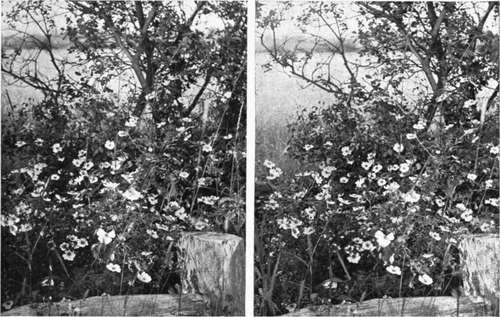
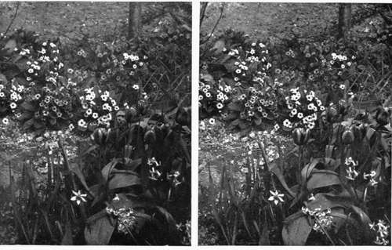
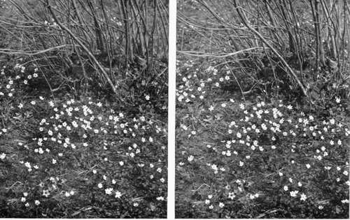

Birds And Their Nests And Eggs. Part 4
Description
This section is from the book "Nature Photography For Beginners", by E. J. Bedford. Also available from Amazon: Nature Photography for Beginners.
Birds And Their Nests And Eggs. Part 4
But to-day, as I want you to get experience in developing by seeing the difference produced by various exposures, I suggest, as we have plenty of plates, that you expose another one on this same subject and give it two seconds. The reason for this increase is that, as you will perhaps remember, in the chapter on lenses, I mentioned the difference between any given stop and exposure when a distant or near subject was being taken. In this case we have had to rack out the bellows to more than the equivalent focus of the lens on account of getting rather close to our subject, and consequently the value of the stop used (f22) is not quite correct in this instance. It may be f26 or thereabouts. You will probably find, when taking near objects, that an increase of exposure from a quarter to a half more than that indicated by the meter will allow you to obtain a softer negative, such as I aim at getting myself, and with care in development there need be no fear of obtaining too flat a result. We now close up the camera, but do not remove it from the stand, because it is probable we shall find another subject before long.
Look! there is a cock Blackbird; notice his brilliant yellow bill and glossy plumage, both exceptionally bright at this period of the year. I'll warrant he has a mate sitting on a nest not far off. Keep quite still; let us sit down for a few minutes, and I will watch him through my binoculars. There he goes to the top of another bush about twelve yards away. He has dropped down to the bottom of it, and I can see him feeding the hen bird sitting on her nest. Wait till he flies away again and we will walk up to the place. He has gone now; bring your camera, and carry it with the legs of the tripod lower down or you may poke me in the eye with them. It will be less likely to catch in the bushes too, if you hold it lower.
There goes the hen bird, and I can hear the alarm note of the cock, who has no doubt gone up to find the reason of her sudden flight. Well, we will get a photograph as quickly as possible, so that she is not kept off the nest longer than we can help. Look! no wonder she remained on the nest so long; she is just hatching out, and there are three young ones in the nest and also two unhatched eggs. We arrange the camera as before, and this time do not get quite so close as, on account of the movement of the young ones, we shall have to give a quicker exposure to this subject than we did to the last one. Being further from the subject, we find that sufficient depth of focus is obtained if we use stop f11, and, as the light is about the same as before, we arrange to give about a quarter of a second exposure. We ascertain that the shutter is set for " time," give the pneumatic release a squeeze and let go, taking care that the young birds are as still as possible at the moment we make the exposure. Again, in this case, I should like you to see the different result produced by using a larger stop and giving a quicker exposure, so reverse the slide to plate number four, and open the lens to f8, set the shutter to " instantaneous" and give about the one-fifteenth of a second. As the light is very good this will give you an exposure long enough to secure sufficient detail in the negative; at the same time, if the right moment is chosen, without showing any movement in the young birds, which seem rather restless and want their mother back to brood them again. So we will now leave the vicinity of the nest and the hen bird will very soon return to them. She has been flying round us while you have been making the exposure, and is anxious for us to be gone. That makes the fourth exposure; we have still eight plates left.
Fig. 40. Wild Roses.
I want to find a Robin's nest for you next if I can, and there is a likely place along that mossy bank by the side of the hedge where the leaves of several seasons are lying thickly. Now will you please keep just behind me with your camera while I look for a nest. What is that in the hole there? yes, it is a Robin's nest, but it is not lined yet, and there are, of course, no eggs in it. We may find another by and by, but are not likely to see one very close to this, unless this has been forsaken, because Robins are pugnacious birds and will not suffer a rival to come into their chosen beat. If this does occur, a pitched battle is the result, and the two will either fight till the death or one be driven off to find quarters elsewhere. Let us make our way back towards the house and somewhere close there we are likely to find another nest.
I will just give this gorse a tap, as it is a good place for a Hedge Sparrow's nest. There! did you see the bird fly out ? No? well I did; it went through the bush underneath the shelter of the thicker part, but I could see it was a Hedge Sparrow. Here is the nest; now isn't that a pretty picture? the green moss amongst the twigs with a lining of horsehair and wool, which has, no doubt, been picked up round about the farm, and the beautiful blue eggs—there are four—with the gorse in bloom, adding its golden lustre and delicious perfume to the scene. I find Hedge Sparrows' nests every season, but they seem just as beautiful to me each time and I always have a desire to photograph each one. Some day I hope you will take up Colour Photography, as I have recently done, and only then will you be able to do justice to such a picture as this. The nest is not very high, so you will be able to get at it easily, and I should like you to try several positions this time before making the exposure, so that you are sure you have selected the most suitable one. As a rule there is no necessity to be in a hurry when photographing nests, and that is one reason why they make suitable subjects to commence upon. At times, one may be found belonging to a species we particularly desire to photograph, but in a very awkward position, and I have had to spend at least half an hour in a case of this kind before I could get a satisfactory view of the nest and its contents on the focussing screen. Where the camera has to be much tilted, it is best to arrange one leg of the tripod on each side of the nest, but otherwise the best position for it is with one leg in front so that it allows you to get between the other two at the back when focussing. This nest is entirely concealed by the overhanging sprays of the gorse, so we must bend them back, but in so doing be very careful not to break any or we shall not be able to restore them to their former positions, and the nest and eggs will, if left too much exposed, be liable to be seen by some boy intent on taking all the eggs he can find, notwithstanding the Wild Birds' Protection Acts; or will become a prey to one or other of the numerous enemies birds have besides human ones. The string you have brought will be useful to tie the branches back, as they not only obstruct the view, but it will be impossible to get the nearer ones into good focus at the same time as the nest and eggs. By shifting your camera as I recommended just now you will soon see where the best view point is. The next little piece of advice I am going to give you is in reference to a thing often overlooked by those taking the photograph of a nest, and I think you will learn to value the hint more after you have had some practical experience. Always try and arrange the view of the nest on the focussing screen so that its longest diameter (the more or less circular top of the nest will appear on the screen as an ellipse) is horizontal and not, as I often see in photographs, inclined. You will be able to do this by shifting one or other of the legs of your tripod so that the lens points directly to the centre of the nest. The result will be a more natural photograph, and is quite worth the extra care required to make it so.
Fig. 42. Spring Flowers.
Fig. 43. Wood Anemones.
Continue to:
- prev: Birds And Their Nests And Eggs. Part 3
- Table of Contents
- next: Birds And Their Nests And Eggs. Part 5
Tags
nature, photography, art, birds, camera